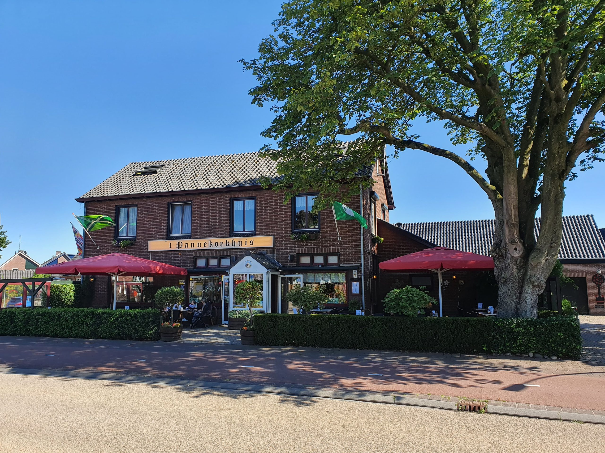
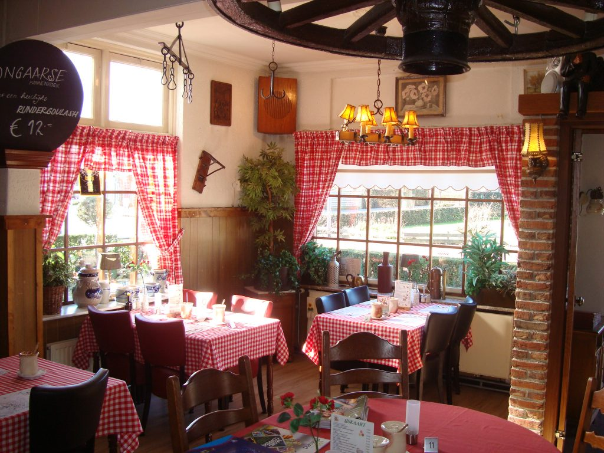
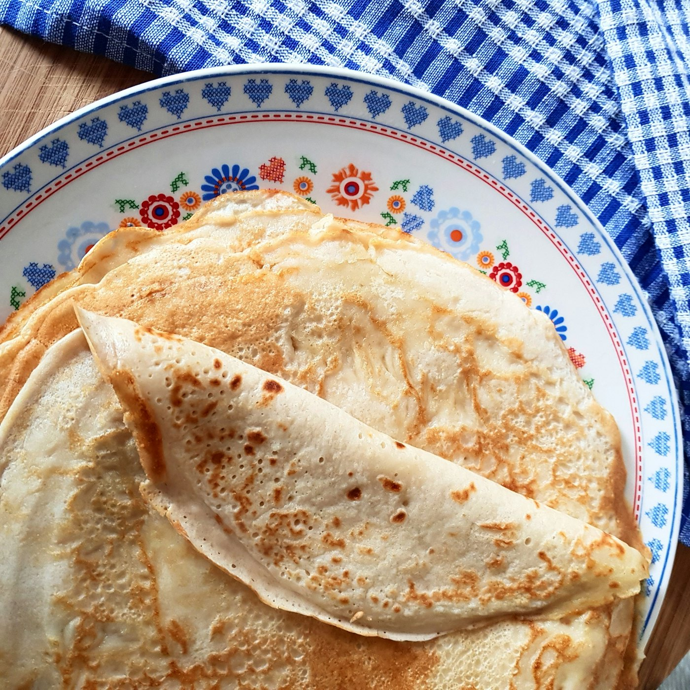
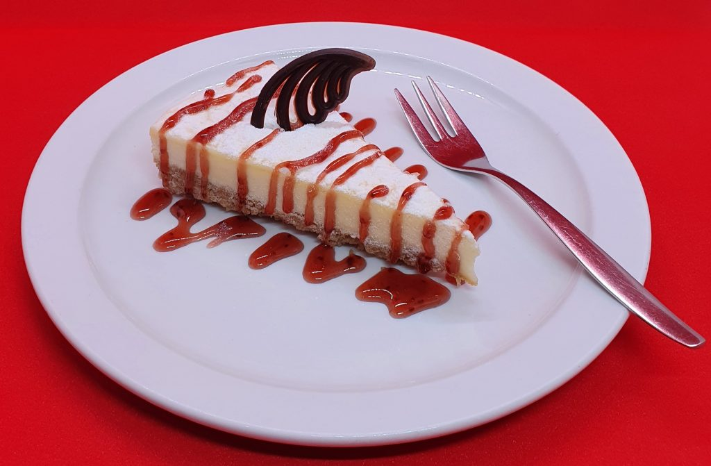
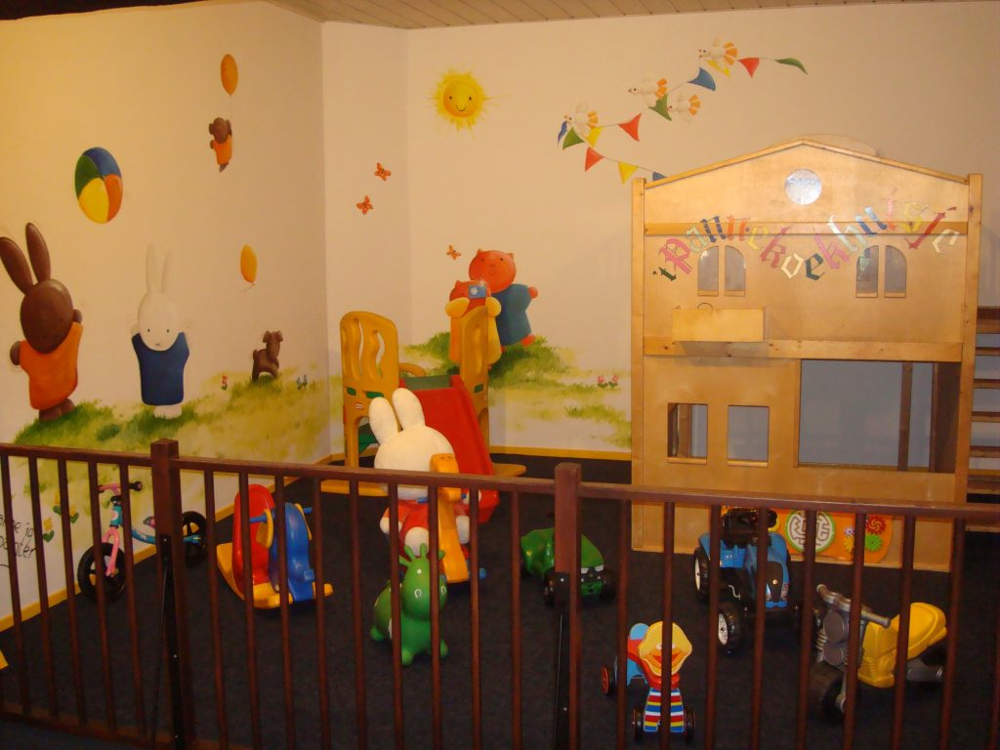
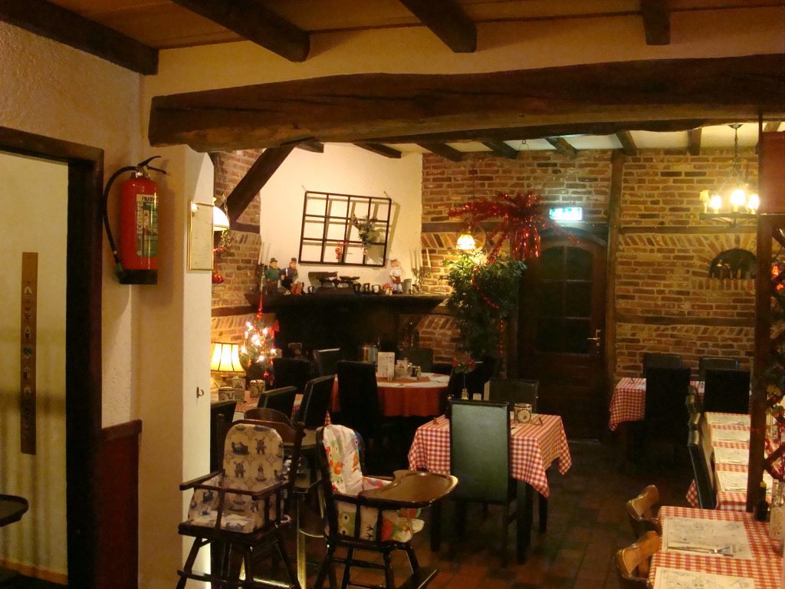
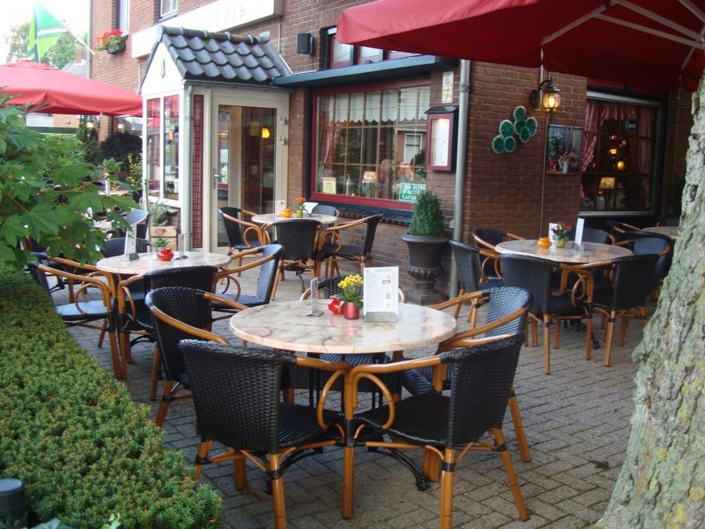

Pannenkoek van de maand
De Bastogne
Met banketbakkersroom, Bastognekruimels en vanille-roomijs met slagroom.
€ 15,10 € 11,35 in november 2026, 25% korting

Pannenkoekhuis in Westendorp, Achterhoek
Ambachtelijk gebakken in een Oudhollands pannenkoekhuis, met een groot speelpodium voor de kinderen en een terras onder de grote boom.
Woensdag t/m zondag open van 12.00 tot 20.00 uur
De Bastogne
Met banketbakkersroom, Bastognekruimels en vanille-roomijs met slagroom.
€ 15,10 € 11,35 in november 2026, 25% korting
3 gangen voor € 17,75
De Carpaccio-pannenkoek
Met rundercarpaccio, rucola, grana padano, pijnboompitten en truffelmayo.
€ 19,75
In ons pannekoekhuis zit u in een gezellige, Oudhollandse sfeer: rood-wit geruite kleden, balken en baksteen. Er zijn tafels voor twee, enkele tafels staan standaard klaar voor groepen tot zo'n 15 personen, en wie vooraf reserveert kan ook met een veel grotere groep komen.
Uw pannenkoeken worden ambachtelijk gebakken in onze moderne keuken. Met maar liefst twintig pannen en ervaren bakkers in een geolied team staat uw pannenkoek zo snel mogelijk op tafel. Lust u geen pannenkoek? Dan zijn er ook diverse andere gerechten.
Bij mooi weer zit u op het terras, in het zonnetje of in de schaduw van de grote boom en de parasols. Wordt het te warm, dan zit u binnen in het restaurant met airco.

"Overheerlijke pannenkoeken, super vriendelijke bediening en lekkere speelruimte voor de jongste! Wij komen niet voor niets elke vakantie hier!!"
Van de Achterhoekse met ham en meegebakken ei tot Grootmoeders pannenkoek met stoofpeertjes. Of stel uw eigen pannenkoek samen.
Naturel pannenkoek € 8,25
Kies daarna zoveel ingrediënten als u wilt, de prijs per ingrediënt staat erachter.
Soep (tomaten-, groente- of dagsoep), een pannenkoek met één ingrediënt naar keuze van de ingrediëntenlijst, en ijs of koffie/thee toe.
De keuken sluit om 19.30 uur. Na 16.00 uur is apart afrekenen niet mogelijk. Prijzen in euro's, menukaart oktober 2026.
Menukaart als PDF




Helemaal achterin het restaurant, tegenover de ingang, ligt het speelpodium voor kinderen tot en met 9 jaar. Het ligt bezaaid met speelgoed en er staat een klein pannekoekhuisje op, om in te spelen of op te klauteren. Zodra de pannenkoek klaar is, moet u misschien wat moeite doen om uw kind weer aan tafel te krijgen.
Zit u liever wat rustiger, zonder de vreugdekreten van onze jonge bezoekers? Voorin het restaurant is het een stuk stiller.
Hallo jongens en meisjes! Kleur de kleurplaat op je mooist in en lever hem in bij 't Pannekoekhuis, dan krijg je een leuke verrassing. Kom jij uit het doolhof? Vul de oplossing in en neem hem mee naar 't Pannekoekhuis.
Een uniek arrangement voor minimaal vier kinderen tot 8 jaar. De tafel wordt feestelijk gedekt met feesthoedjes en een speciale stoel voor de jarige, en voor en na het eten spelen de kinderen op het speelpodium.
Het kijkje in de keuken kan alleen op doordeweekse dagen vóór 17.00 uur en als het niet te druk is in de keuken.
Kinderfeestje
€ 13,50 per kind
Met ijs toe
+ € 4,00 per kind
Met een speciale verrassing voor de jarige.
Knutseloptie
+ € 4,00 per kind
Een cakeje met slagroom om zelf te versieren met versiersnoep, en een ruim assortiment knutselmateriaal op tafel. Het knutselen wordt begeleid door de ouders zelf.


Voor een feest, presentatie of dagje uit: in ons Oudhollands ingerichte pannenkoekhuis worden de pannenkoeken nog ambachtelijk gebakken. We liggen in een bosrijke omgeving vlakbij kasteel Slangenburg, op zo'n 9 km van Doetinchem. Prima te combineren met een fietstocht, wandeltocht of dagje uit.
Inclusief twee consumpties. U krijgt een speciale menukaart zonder prijzen.
€ 23,95 p.p. all-in
€ 20,75 p.p. zonder soep vooraf
Groepen tot 28 personen kunnen apart zitten in de Beste Kamer of de zijkamer, uitstekend voor een privé-aangelegenheid. Zijn er kleine kinderen bij, dan zit u toch dicht bij het speelpodium.
Bij mooi weer kunt u ook op het terras plaatsnemen, met ruimte voor ongeveer 60 personen. Reserveren voor het terras is niet mogelijk.
Reserveer minimaal twee dagen van tevoren, dan zorgen we voor een vlotte service.
Met een unieke Buurman & Buurman-knuffel naar keuze, voor € 14,75. Ook nog te krijgen: de Diep in de zee pannenkoek met WWF-schildpadknuffel (€ 13,50) en de Hup Holland Hup pannenkoek met hoed met muziek (€ 12,50). Op = op.
Is het buiten te warm, dan zit u heerlijk koel binnen in ons restaurant.
Met rundercarpaccio, rucola, grana padano, pijnboompitten en truffelmayo.
Een heerlijke cheesecake met frambozensaus op de kaart. Kom jij hem snel proeven?
't Pannekoekhuis was ook op tv bij Serious Request 2018. Volg ons voor het laatste nieuws op Facebook en Instagram.
Na 16.00 uur is apart betalen niet mogelijk.
2e Kerstdag open van 12.00 tot 20.00 uur. 1e Kerstdag en Oud- en Nieuwjaarsdag gesloten.
Bellen is sneller, tijdens openingstijden:
0315-298160
Geef altijd de datum, tijd, het aantal volwassenen en kinderen door, en of u een kinderstoel of stoelverhoger nodig heeft. Een reservering is pas definitief als wij die hebben bevestigd. Op dezelfde dag reserveren via dit formulier kan tot uiterlijk 14.00 uur; daarna zijn wij zelf aan het werk en zien we de mail niet meer.
In een bosrijke omgeving vlakbij kasteel Slangenburg. Doetinchem ligt op zo'n 9 km afstand.
Route plannen